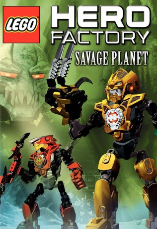

#2792 LEGO Hero Factory: Savage Planet
 gesehen am 21.12.2015
gesehen am 21.12.2015
 
 IMDB-Wertung: 7.2 / 10
IMDB-Wertung: 7.2 / 10  Metascore: 0
Metascore: 0 
Irgendwann in ferner Zukunft werden in einer Fabrik mutige Roboter hergestellt, die das Böse auf der Welt bekämpfen sollen. Unter der Führung des erfahrenen Stormer muss sich eine Gruppe von unerfahrenen Nachwuchsrobotern in einer Auseinandersetzung mit einer Horde feindlich gesinnter Roboter bewähren. Stormer entdeckt, dass es sich bei einem ihrer mächtigsten Gegner um einen alten Bekannten handelt.
Jahr: 2011
Dauer: 43 Minuten
FSK: 6
Land: USA Studio: Warner Home VideoTonspuren:
Untertitel:
Auflösung: SD (720x400) Größe: 698 MB
Genre: Action, Sci-Fi, Abenteuer, Animation/Trick, Familie
Regisseur: Howard E. Baker
Drehbuch: Sean Catherine Derek
Soundtrack: David Wurst, Eric Wurst
Darsteller:
Datei: X:\Kinder Collections\LEGO\LEGO Hero Factory Savage Planet (2011, FSK6, 720x400).avi seit 15.12.2015
Festplatte: Kinder-Filme+Trick
 Es gibt insgesamt 34 Filme in der Gruppe 'Kinder Collections\LEGO'
Es gibt insgesamt 34 Filme in der Gruppe 'Kinder Collections\LEGO'